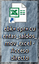
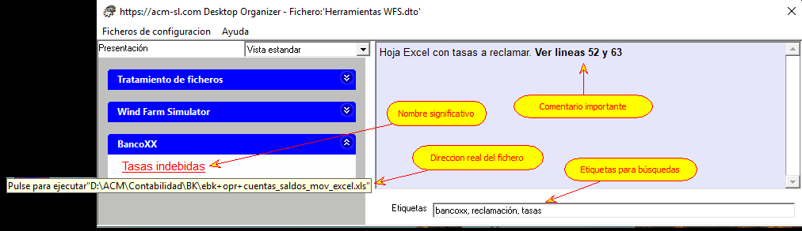

Una práctica habitual es almacenar los documentos en disco creando carpetas y subcarpetas, cuyos nombres implican una determinada clasificación del documento. P.e. "Fotos", "Fotos/2005", "Fotos/2005/Lucia", etc. Esta nomenclatura se elige, normalmente, para ayudarnos a recordar donde hemos dejado el documento. Sin embargo, existen documentos cuyos nombres siguen patrones que no son autoexplicativos: p.e. "D:\ACM\Contabilidad\BK\ebk+opr+cuentas_saldos_mov_excel.xls". Si este documento es de uso frecuente, es común crear un "enlace directo" en el Escritorio, como muestra la figura siguiente:

Esta aproximación tiene el inconveniente de que no se puede identificar bien el documento a través del icono (en este caso, es el icono genérico asociado a una hoja de cálculo), y hay que utilizar un texto que sea significativo. Pero, como se aprecia, el enlace no ofrece espacio suficiente para que ese texto sea significativo.
La alternativa en el Organizador de Escritorio para este problema es el concepto de "Opción". Ver siguiente figura:

En este ejemplo, hemos sustituido el título de la Opción, que originariamente era el nombre del fichero al que está asociado, por otro texto, que puede ser todo lo largo que se necesite, y que es significativo para el tema (Grupo) donde está creada la Opción.
Además, puede que este mismo fichero sea interesante en otro Grupo. Por ejemplo, puede que este fichero xls tenga que estar asociado a una reclamación judicial: podemos crear otro Grupo con este título ("Reclamación judicial"), y crear una Opción en él, que apunte al mismo fichero xls, pero con otro nombre, p.e. "Prueba nº 5: Tasas indebidas".